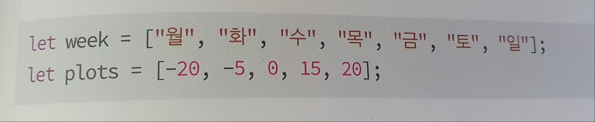
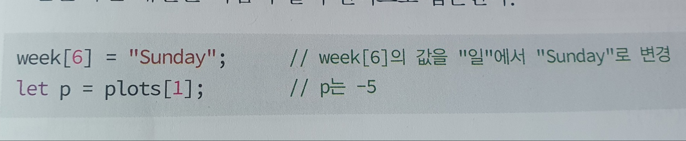

배열을 만드는 법
자바스크립트에서 배열은 다음 2가지 방법으로 만들 수 있다.
- [ ] 로 배열 만들기
- Array 객체로 배열 만들기
만드는 방법은 다르지만 일단 배열이 생성되면 배열을 사용하는 방법은 동일하다.
[ ] 로 배열 만들기
[ ] 연산자를 이용하여 쉽게 배열을 만들 수 있다.
[ ] 안에는 만들고자 하는 원소들의 초기 값들을 나열하면 된다.
week와 plots 배열을 만들어보자

이 코드에서 week와 plots는 배열의 이름이다. week는 크기가 7인 배열이며 plots는 크기가 5인 배열이다.
만들어진 배열은 다음과 같이 인덱스로 접근한다.

배열 크기와 원소 추가
배열은 처음 만들어진 크기로 고정되지 않고, 원소를 추가하면 늘어난다. 다음과 같이 크기가 5인 plots 배열에 원소를 더할 수 있다.